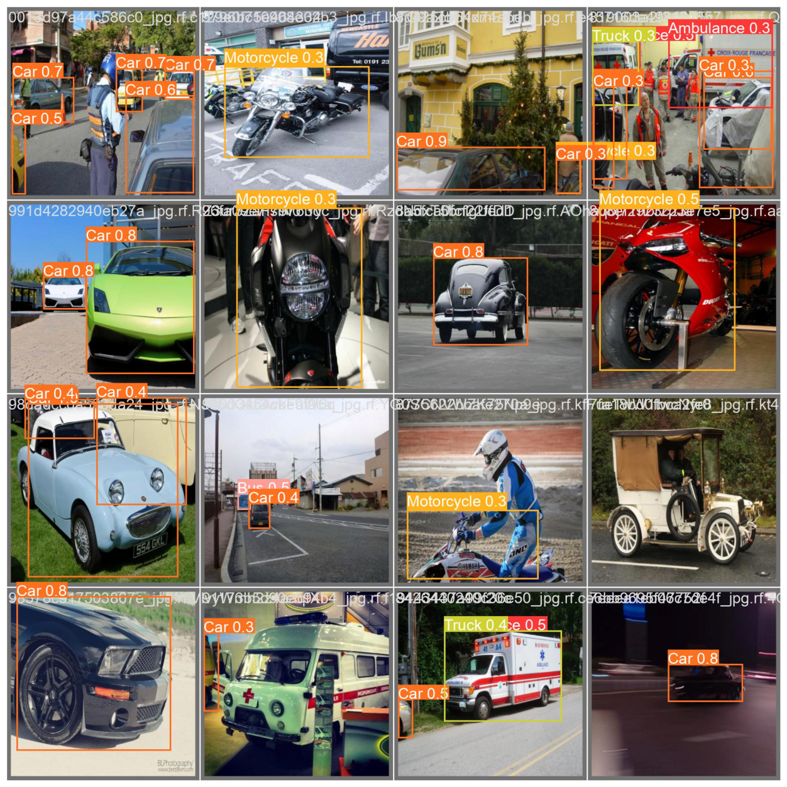
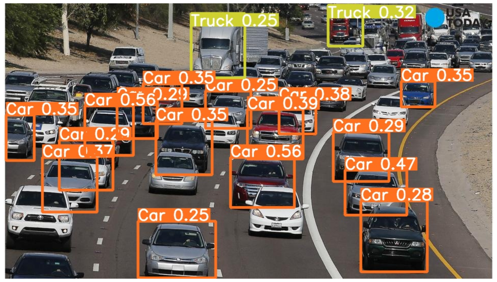
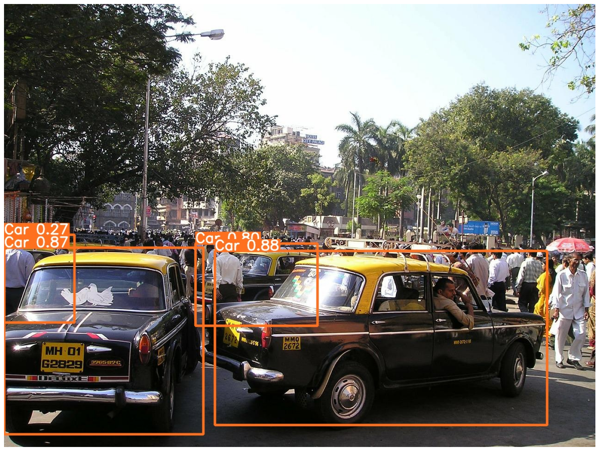

Purpose
Self driving technologies rely on accurate recognition of road signs, vehichles and more. This project uses computer vision to identify different types of vehichles and common objects seen on the road.



Inference
Methodology
Three models were fine tuned on pretrained yolo models of varying sizes. Using transfer learning, data was gathered into a yolo ready format. Fine tuning of learning rate and batch size was applied to create the final model. Freezing 14 layers allowed faster training while maintaining good accuracy. The model reached near zero f1 loss on the final yolov5m model.
Techniques
-
Object Detection
-
YOLO
-
PyTorch
-
Numpy